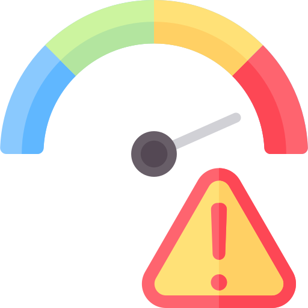

Definição de Biossegurança
Um conjunto de normas e procedimentos que visam:
- Garantir a proteção dos funcionários;
- Garantir a proteção da coletividade;
- Garantir a proteção do meio ambiente;
- Garantir a proteção do material biológico;
Sistema de Biossegurança Brasileiro
Não existe uma lei brasileira que regulamenta especificamente o trabalho realizado em laboratórios, a não ser a legislação envolvendo atividades com OGMs;
Para biossegurança, existem diretrizes cedidas pela Comissão de Biossegurança em Saúde do Ministério da Saúde (CBS/MS), que cumprem um papel importante na efetivação de ações relacionadas à Biossegurança em atividades laboratoriais:
- Classificação de risco dos agentes biológicos / Ministério da Saúde, Secretaria de Ciência, Tecnologia e Insumos Estratégicos, Departamento do Complexo Industrial e Inovação em Saúde. – 2. ed. – Brasília : Editora do Ministério da Saúde, 2010;
- Diretrizes gerais para o trabalho em contenção com material biológico / Ministério da Saúde, Secretaria de Ciência, Tecnologia e Insumos Estratégicos – Brasília: Ministério da Saúde, 2004.
Trabalho em Contenção com Material Biológico
Trabalho em Contenção com Material Biológico
O objetivo da contenção é reduzir ou eliminar a exposição da equipe de um laboratório, de outras pessoas e do meio ambiente em geral aos agentes potencialmente perigosos
Avaliação do Risco
Do trabalho a ser realizado com um agente específico determinará a combinação adequada dos diferentes níveis de contenção.
Níveis de Contenção
Contenção Primária
Uso de Equipamentos de Proteção Individual, boas práticas de laboratório (inc. Procedimentos Operacionais Padrão), vacinação ou profilaxia;
Contenção Secundária
Elementos estruturais das instalações, uso de equipamentos de proteção secundária e procedimentos operacionais padrão.
A avaliação de risco resulta numa classificação de risco.
Níveis de Biossegurança
Classificação dos Riscos
As classes de risco de material biológico são assim definidas:

Classe de Risco 1
Baixo risco individual e para a comunidade: inclui os agentes biológicos conhecidos por não causarem doenças no homem ou nos animais adultos sadios.Classe de Risco 2
Moderado risco individual e limitado risco para a comunidade: inclui os agentes biológicos que provocam infecções no homem ou nos animais, cujo potencial de propagação na comunidade e de disseminação no meio ambiente é limitado;Classe de Risco 3
Alto risco individual e moderado risco para a comunidade: inclui os agentes biológicos que possuem capacidade de transmissão por via respiratória e que causam patologias humanas ou animais, com tratamentos conhecidos;
Classe de Risco 4
Alto risco individual e para a comunidade: inclui os agentes biológicos com grande poder de transmissibilidade por via respiratória de transmissão e tratamento desconhecidas.Os laboratórios da FM possuem nível de biossegurança 1 ou 2. dentifique o nível de biossegurança de seu laboratório!
Nível de Biossegurança 1

- O acesso ao laboratório deve apresentar as áreas de circulação desobstruídas e livres de equipamentos e estoques de materiais;
- A sinalização contendo o símbolo internacional de risco biológico, advertência de área restrita, identificação e telefone de contato do Profissional Responsável, deve ser afixada na porta de acesso ao laboratório onde há o manuseio de material biológico.
Nível de Biossegurança 1
Nível de Biossegurança 1
Todos os resíduos devem ser descartados segundo normas legais e técnicas vigentes e em cumprimento ao Plano de Gerenciamento de Resíduos da Instituição:

- Nos insetários, todo o material a ser descartado deve ser acondicionado em lixeiras. Os sacos do lixo devem ser recolhidos ao final do dia e descontaminados por 12h a -18ºC ou por autoclavagem. Após descontaminação podem ser descartados;
- No laboratório de Leishmania, todo o material a ser descartado deve ser acondicionado em saco de autoclave. Quando os sacos estiverem 2/3 cheios devem ser fechados e transportados em dupla contenção até a autoclave para descontaminação. Após descontaminação podem ser descartados;
- Nos laboratórios de fungos, todo o material a ser descartado deve ser acondicionado em saco de autoclave. Quando os sacos estiverem 2/3 cheios devem ser fechados e autoclavados para descontaminação. Após descontaminação podem ser descartados.
Nível de Biossegurança 1
Nível de Biossegurança 1
- Equipamentos de proteção individual, tais como luvas, avental ou jaleco, são requeridos durante o trabalho e devem estar descritos em documentos de Procedimentos Operacionais Padrão (POPs);
- Exemplo de POP do Laboratório de Farmacognosia da UnB:

Nível de Biossegurança 1
O jaleco deverá ter mangas compridas ajustadas nos punhos e não deve ser usado fora da área laboratorial. A equipe do laboratório nunca deve levar jaleco para casa sem prévia descontaminação;
Os EPIs devem ser retirados antes de sair do ambiente de trabalho, depositados em local exclusivo para esse fim e descontaminados antes de serem reutilizados ou descartados;
Mãos enluvadas não devem tocar “superfícies limpas” tais como teclados, telefones, maçanetas, entre outros. Luvas devem ser usadas, segundo suas indicações e seu uso é restrito ao laboratório. Luvas descartáveis não poderão ser lavadas, nem reutilizadas;
É obrigatório o uso de calçados fechados que possam proteger contra acidentes.
Nível de Biossegurança 1
Nível de Biossegurança 2

Proibida a Entrada de Pessoas que Apresentem os seguintes sintomas:

Nível de Biossegurança 2
Manter as Portas da Antesala sempre fechadas
Apenas Abrir um Porta de Cada Vez
Conselho Nacional de Biossegurança (CNBS)
Manter registro da utilização do sistema de luz ultravioleta das Cabines de Segurança Biológica (CSBs) com contagem do tempo de uso (vida útil de 7.500 horas);
Manter um sistema de manutenção, calibração e de certificação dos equipamentos de contenção. A cada seis meses as CSBs e demais equipamentos essenciais de segurança devem ser testados, calibrados e certificados;
O equipamento contaminado deverá ser descontaminado de acordo com as normas locais, estaduais ou federais, antes de ser enviado para conserto, manutenção ou acondicionamento para transporte, de acordo com as normas locais, estaduais ou federais aplicáveis, antes de ser removido do local;
Acidentes ou incidentes que resultem em exposição a materiais biológicos potencialmente patogênicos devem ser imediatamente notificados ao Profissional Responsável, sendo mantido registro por escrito dos acidentes e das providências adotadas;
Todos os materiais e resíduos potencialmente infecciosos devem ser colocados em um recipiente com uma tampa que evite o vazamento durante a coleta, o manuseio, o processamento, o armazenamento, o transporte ou o embarque. Devem ser descontaminados, preferencialmente esterilizados, antes de serem reutilizados ou descartados;
O laboratório deve ser projetado de modo a permitir fácil limpeza e descontaminação.
Carpetes e tapetes não são apropriados para laboratório.

Nível de Biossegurança 2
Devem ser usadas luvas, quando houver um contato direto com materiais e superfícies potencialmente infecciosas ou equipamentos contaminados. O mais adequado é usar dois pares de luvas. Essas luvas devem ser desprezadas quando estiverem contaminadas, o trabalho com materiais infecciosos for concluído ou quando a integridade da luva estiver comprometida. Luvas descartáveis não podem ser lavadas, reutilizadas ou usadas para tocar superfícies "limpas" (teclado, telefones, etc.), e não devem ser usadas fora do laboratório. As mãos deverão ser lavadas após a remoção das luvas. Luvas descartáveis não devem ser reutilizadas.
Todas as culturas, colônias e outros resíduos devem ser descontaminados antes de serem descartados através de um método de descontaminação aprovado como, por exemplo, esterilização por calor úmido (autoclave). Os materiais que forem ser descontaminados fora do próprio laboratório devem ser colocados em recipientes inquebráveis, à prova de vazamentos e hermeticamente fechados para serem transportados ao local desejado!
Devem ser utilizadas CSBs, classe I ou II, sempre que sejam realizadas culturas de tecidos infectados, bem como procedimentos com elevado potencial de criação de aerossóis, como trituração, homogeneização, agitação vigorosa, ruptura por sonicação, abertura de recipientes contendo material onde a pressão interna possa ser maior que a pressão ambiental e cultivo de tecidos ou fluidos infectados. Sempre que o procedimento for potencialmente gerador de aerossóis e gotículas, provenientes de materiais biológicos, deverá ser utilizada a proteção para o rosto (máscaras, protetor facial, óculos de proteção, CSB, entre outras);
A centrifugação, fora da CSB, só poderá ser efetuada se utilizada centrífuga de segurança e frascos lacrados. Esses só deverão ser abertos no interior da cabine. Uma autoclave deve estar disponível, no interior ou próximo ao laboratório, dentro da edificação, de modo a permitir a descontaminação de todos os materiais utilizados e resíduos gerados, previamente a sua reutilização ou descarte;
- Nos insetários, não existirão janelas ou as janelas serão seladas para não serem abertas e teladas com dupla tela;
- Nos insetários, não é permitido o descarte de material contaminado pelo nas pias, sem antes este ser descontaminado por meio químico ou físico;
- Os jalecos devem ser descontaminados semanalmente. Jalecos descartáveis serão colocados na lixeira, descontaminados e descartados com os demais materiais contaminados para descarte. Os jalecos não descartáveis, para serem retirados dos laboratórios, devem ser previamente descontaminados por congelamento e/ou autoclavagem. A equipe do laboratório nunca deve levar os jalecos dos laboratórios NB2 para a casa.
Cabines de Segurança Biológica
Cabines de Segurança Biológica Classe I
- “É uma cabine ventilada com fluxo de ar do ambiente, podendo ter a frente totalmente aberta ou com painel frontal ou painel frontal fechado com luvas de borracha. Possui duto de exaustão com filtro HEPA. Não há proteção para o experimento somente para o operador e o ambiente.”
- Cabines de fluxo laminar.